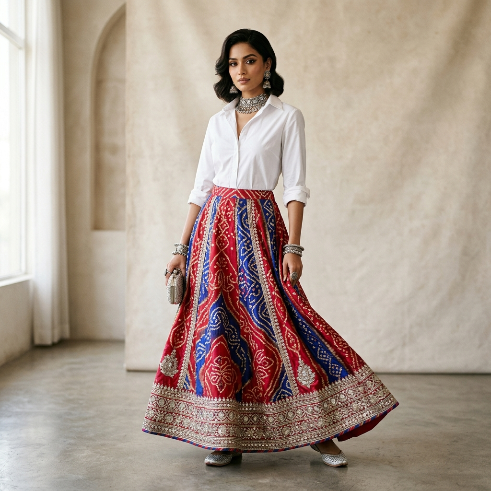
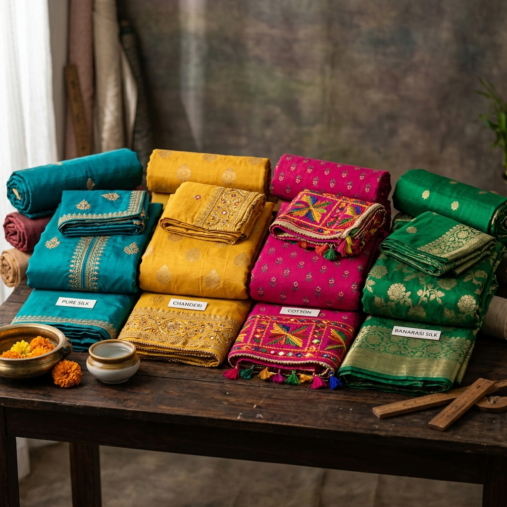
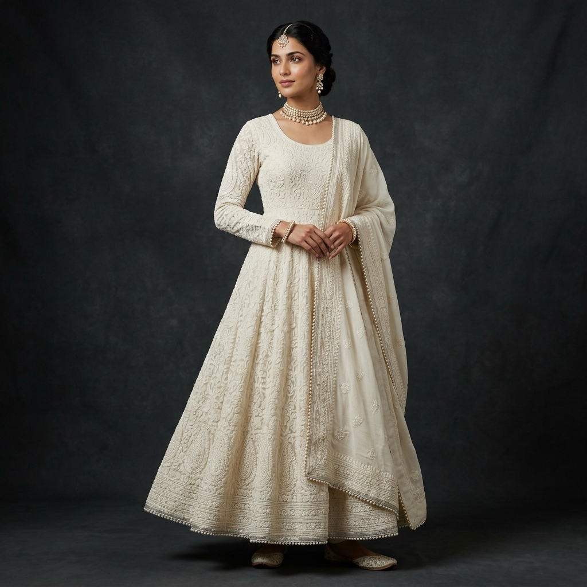
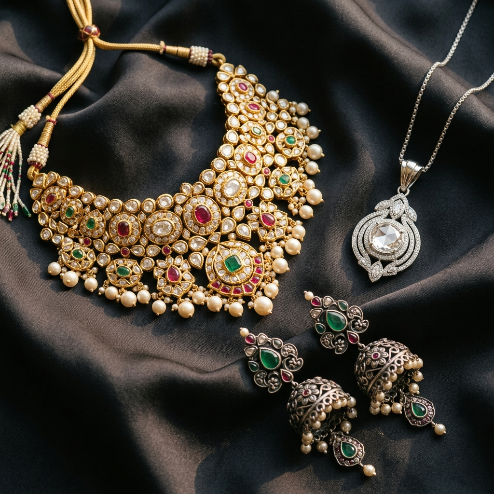
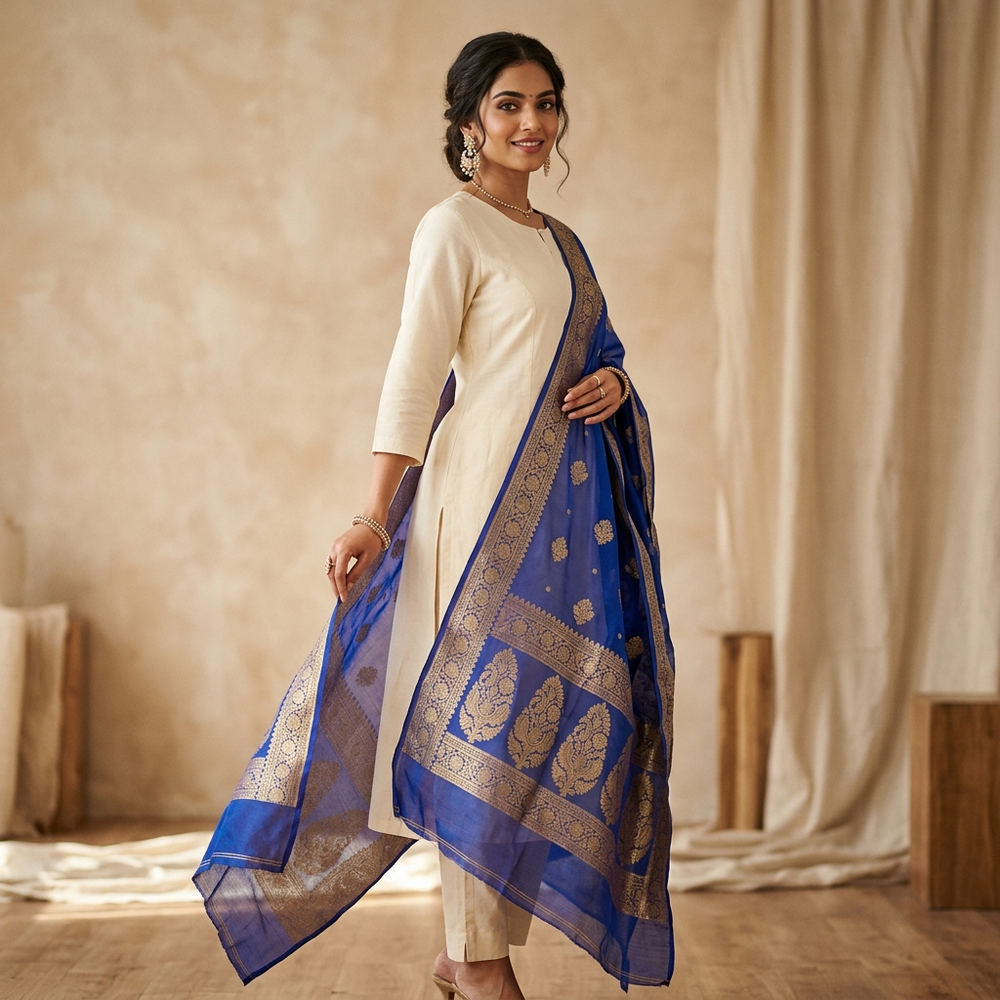

What Colors Go Together in Clothing? A Practical Guide
Learn what colors go together in clothing using simple colour combination strategies, neutral foundations, accents and practical outfit examples.
Read Article →How Do I Know What Colors Suit Me? A Practical Guide
Learn how to find the colours that suit you by comparing warmth, contrast, depth and intensity—and turn your observations into a personal clothing palette.
Read Article →How Do I Choose Clothes for My Skin Tone? A Practical Colour Guide
Learn how to choose clothing colours for your skin tone by understanding undertone, depth, contrast and colour intensity.
Read Article →
How to Create Outfits From Clothes You Already Own
Learn how to create more outfits from clothes you already own using simple colour, proportion, footwear and occasion-matching principles.
Read Article →Why Do My Outfits Look Bad Together? 7 Common Reasons
Wondering why your outfits look wrong together? Learn how colour, contrast, proportions, formality and context make an outfit feel off—and how to fix it.
Read Article →I Have Clothes but Nothing to Wear: What’s Actually Going Wrong?
Have a full wardrobe but still feel like you have nothing to wear? Learn why it happens and how to create more outfits from clothes you already own.
Read Article →Festive Dupatta Colour Combinations & Draping Ideas to Refresh Any Plain Suit
Transform plain suits instantly. 5 vibrant dupatta color combinations and drape styles to elevate your everyday cotton and silk kurtas.
Read Article →
Sangeet & Evening Outfit Colours for Indian Skin Tones (Beyond Plain Black)
Ditch plain black for evening wedding events. Discover deep jewel tones (Emerald, Sapphire, Wine Red) that illuminate Indian skin.
Read Article →
Monsoon & Humid Weather Ethnic Wear: Fabrics & Colours That Stay Fresh
Stay stylish during Indian monsoons and high humidity. Best lightweight fabrics (Mulmul, Georgette) and mud-safe ethnic color choices.
Read Article →
Footwear & Handbag Colour Matching Rules for Indian Ethnic Outfits
Should your potli bag match your juttis or your dupatta? Discover 4 foolproof accessory color matching rules for ethnic suits.
Read Article →
Unstitched Suit Buying Guide: How to Pick Fabric Colours That Suit You Before Stitching
Never waste money on tailor stitching again. How to test unstitched cotton, silk, and chanderi fabric colors against your skin undertone.
Read Article →
Monochrome Indian Outfits: How to Wear All-Black, All-White, or All-Pastel Suits
Single-color suits look incredibly chic. Learn texture contrast, embroidery accents, and undertone depth rules for monochrome outfits.
Read Article →Men’s Footwear Colour Matching Guide for Indian Ethnic & Formal Outfits
How Indian men can match tan, dark brown, black, and maroon leather footwear (juttis, loafers, oxfords) with pyjamas and formal trousers.
Read Article →
Indo-Western Colour Formulas: How to Pair Jeans & Shirts with Indian Ethnic Pieces
Master fusion fashion. Learn 5 foolproof color rules for pairing western jeans, crisp shirts, and blazers with Indian dupattas and skirts.
Read Article →How to Restyle 1 Heavy Ethnic Suit into 4 Outfits for Wedding Functions
Learn 4 color-swapping formulas to restyle a single heavy ethnic suit across Haldi, Sangeet, Wedding, and Reception.
Read Article →
Haldi & Mehndi Outfit Colours: How to Wear Yellow & Green Without Looking Washed Out
Discover which shades of yellow (marigold, mustard) and green (olive, mint, forest) flatter your Indian skin undertone for Haldi & Mehndi.
Read Article →
Gold, Silver, or Oxidized? Jewelry Metals & Colours for Indian Skin Tones
Discover whether Gold, Silver, Platinum, or Oxidized jewelry flatters your Indian skin tone. Complete undertone guide to Kundan, Polki, and gemstones.
Read Article →
What's My Colour Season? A Simple Undertone Test (No App Needed)
Find your colour season in 3 quick questions — undertone, depth, and clarity. No professional draping required.
Read Article →
Warm vs Cool vs Neutral Undertone: How to Tell the Difference
A clear side-by-side comparison of warm, cool, and neutral undertones — tests, best colours, and best metals for each.
Read Article →
The Complete Guide to Indian Skin Tones and the Colours That Suit Them
A complete, undertone-aware guide to Indian skin tones — fair, wheatish, dusky, and deep — and the colours that genuinely suit each.
Read Article →
Which Colour Suits You for Diwali? A Guide by Skin Tone
Choosing your Diwali outfit colour? Here's what actually suits your undertone and skin tone — not just what's trending this year.
Read Article →
Bridal Lehenga Colours by Skin Tone: What Actually Suits You
Not every red suits every bride. A practical, undertone-based guide to choosing your bridal lehenga colour.
Read Article →
Office Wear Colours That Actually Suit You (Not Just Boring Black and Navy)
Professional doesn't have to mean black and navy on repeat. Here's how to build a work wardrobe in colours that actually match your undertone.
Read Article →
Which Kurta Colours Suit Your Skin Tone? A Practical Guide
From everyday cotton kurtas to festive silk ones — here's how to pick kurta colours that actually suit your skin tone.
Read Article →
Does Pantone's 2026 Colour of the Year (Cloud Dancer) Suit Your Skin Tone?
Pantone named Cloud Dancer, a soft white, its 2026 Colour of the Year. Here's whether it actually suits your skin tone — and how to wear it if it doesn't.
Read Article →
Is Colour Analysis Actually Legit, or Just a TikTok Trend?
Colour analysis blew up on TikTok, but is the science behind it real? An honest look at what's proven and what's hype.
Read Article →
12-Season vs 4-Season Colour Analysis: What's the Difference?
Confused why some sites talk about 4 colour seasons and others about 12? Here's the difference explained simply.
Read Article →
Professional Colour Analysis vs. AI Colour Analysis: Which Should You Trust?
In-person colour consultants vs AI-powered apps — an honest comparison of cost, accuracy, and convenience.
Read Article →
Capsule Wardrobe by Colour Season: Building a Wardrobe That Always Matches
Most capsule wardrobes fail because of colour, not quantity. Here's how to build one around your actual palette.
Read Article →
Why Do Some Colours Make You Look Tired? The Science of Colour and Skin
It's not your imagination — the wrong colour can genuinely make you look more tired. Here's the science behind why.
Read Article →
Which Saree Colours Suit Your Skin Tone? A Practical Guide
Choosing a saree color? Learn which shades of gold, red, pastels, and jewel tones harmonize with your warm, cool, or neutral skin undertone.
Read Article →
Men's Sherwani and Wedding Wear Colours by Skin Tone
Groom styling made simple. A practical guide to choosing sherwani, kurta, and wedding wear colors that suit your warm or cool skin undertones.
Read Article →
How to Color Block Your Outfits: The Indian Fashion Guide
Master the art of color blocking. Learn how to combine solid, contrasting clothing colors for a high-impact, modern ethnic look.
Read Article →
Navratri 2026 Colour Calendar: Which Shade to Actually Wear for Your Indian Skin Tone
Navratri colour calendar 2026 with a twist — find out which shade of each day's colour actually flatters your fair, wheatish, or dusky skin tone for garba.
Read Article →
Anarkali Colours by Skin Tone: The Complete Indian Guide (Fair to Dusky)
Find the best anarkali colours for your Indian skin tone — fair, wheatish, or dusky — with warm/cool undertone breakdowns, dupatta contrast tips, and fabric advice.
Read Article →
Wedding Guest Outfit Colours by Skin Tone: The Indian Guide (Ethnic, Indo-Western & More)
What colour to wear as a wedding guest in India? Skin-tone-matched outfit colour guide for salwar kameez, indo-western sets, palazzo suits, and anarkalis — day vs evening.
Read Article →
7 Colour Rules for Indian Skin That Are Completely Wrong (And What to Wear Instead)
Stop dressing by outdated colour rules. We bust 7 common Indian skin tone colour myths — using undertone science — and tell you exactly what to wear instead.
Read Article →
Best Outfit Colours for Men With Indian Skin Tones (Fair, Wheatish & Dusky)
What colour clothes suit Indian men? A complete guide to outfit colours for fair, wheatish, and dusky Indian men — covering t-shirts, shirts, kurtas, and ethnic wear.
Read Article →
How to Organize Your Indian Ethnic Wardrobe by Color Palette (Step-by-Step Guide)
Learn how to organize your Indian clothes by color palette and undertone. A practical closet organization guide for sarees, kurtas, dupattas, and palazzo suits.
Read Article →
7 Garment Color Formulas to Mix & Match Indian Clothes You Already Own
Unlock 10+ new ethnic outfits from clothes in your existing closet. 7 color theory formulas for pairing kurtas, palazzos, sarees, and dupattas without buying new clothes.
Read Article →
Why Certain Garment Colors Make Wheatish Skin Look Dull (And How to Fix It)
Discover why certain clothing colors make wheatish skin look dull, greyish, or washed out. Learn color mechanics, undertone clashes, and quick garment color fixes.
Read Article →Palazzo & Indo-Western Suit Colour Combinations for Every Indian Skin Tone
Discover the best palazzo suit color combinations matched to your skin tone. Color matching guide for wide-leg palazzos, co-ords, and Indo-Western sets.
Read Article →
How to Pair Contrasting Kurta & Bottom Colours from Garments You Already Own
Learn how to pair contrasting kurta and bottom colors using garments in your existing closet. Master color contrast rules for separate kurtas, trousers, and skirts.
Read Article →
How to Choose the Perfect Contrast Dupatta for Plain Suits (5 Colour Rules)
Learn how to choose the perfect contrast dupatta for plain suits. Discover color wheel formulas, undertone matching rules, and ethnic outfit styling tips.
Read Article →